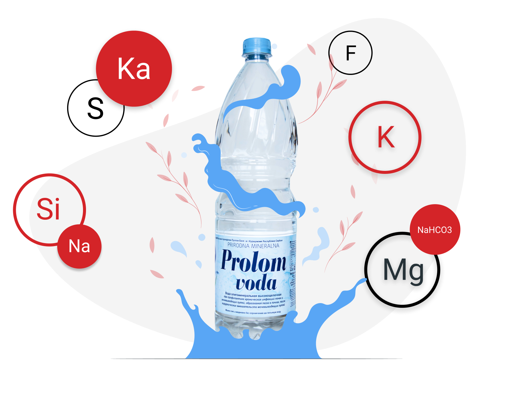

400+
лет истории
Рекомендована
врачами
Полностью
натуральный продукт
Не имеет
противопоказаний
О компании
Познакомимся? Мы — «Лечебные Воды», и вот уже более 16 лет мы являемся официальным поставщиком минеральных вод из Сербии и Чехии в Россию. Мы сотрудничаем с аптеками, интернет-магазинами, медицинскими центрами и врачами. Приобретая минеральную воду Пролом у нас, вы можете быть уверены оригинальности и качестве продукта.
Пролом —
это сербская минеральная вода вулканического происхождения. С ней ты почувствуешь себя энергичнее, стройнее и привлекательнее!
Ускорит обмен веществ
С Пролом похудеть станет легче! Исследования подтверждают, что метаболизм у людей, пьющих два литра воды в день, работает быстрее, чем у тех, кто не поддерживает водный баланс в норме. Пей Пролом и не допускай обезвоживания — тогда все процессы в организме начнут работать быстрее, лишний вес начнет уходить намного охотнее, а твоя кожа всегда будет увлажненной и напитанной.
Сделает твою кожу красивее
Вода показана при проблемной коже и эффективно используется в комплексной терапии для лечения и профилактики псориаза, аллергических высыпаний, экзем, акне. Употребление Пролома поспособствует более красивой и чистой коже, а примочки с водой Пролом на воспаленные кожные участки помогут быстрее снять зуд и раздражение.
Повысит иммунитет
Щелочной состав воды Пролом поможет тебе распрощаться с ОРВИ и простудами. Ты активируешь защитные силы организма, не прибегая к лекарствам. Это отразится на общем состоянии организма: у тебя появится больше энергии и сил!
Выведет интоксикации
Пролом выводит из организма шлаки и токсины, и это положительно сказывается как на твоем самочувствии, так и на твоем внешнем виде. Ты ведь знаешь, что все токсины отражаются на нашем лице в виде акне, аллергии и высыпаний? Так действуй — устрой детокс и избавься от лишнего вместе с Пролом-водой!
Устранит любые отеки
Больше никакого опухшего лица по утрам! Ноги, руки, пальцы, кожа вокруг глаз — Пролом избавит от отеков во всех “проблемных местах”. Ты забудешь о чувстве “припухлости” и неповоротливости даже в жару. Даже после употребления соленого или сладкого. Даже после долгого сна на животе!
Восполнит баланс электролитов
Заканчивай свои тренировки правильной водой и напитывай организм силой минералов — ты почувствуешь прилив энергии и бодрости! Поддерживай водный баланс, чтобы твое тело всегда было в тонусе, а самочувствие всегда было на высоте.
Вмиг победит похмельный синдром
Если вы немного “переборщили” на вечеринке и на утро никак не можете прийти в себя, есть натуральный способ быстро прийти в себя — выпить бутылочку Пролом-воды. Мягко справляясь с детоксикацией, Пролом быстро избавит вас от чувства похмелья и подготовит к новому продуктивному дню.

Показания
- ОРВИ, ОРЗ
- варикозное расширение вен
- гипертоническая болезнь с сердечной недостаточностью
- кожные заболевания
- лишний вес
- мочекаменная болезнь
- нарушение минерального обмена
- отечность
- пиелонефрит
- похмельный синдром
- простатит
- псориаз
- состояние после хирургических операций на мочеполовом тракте
- хронические инфекции почек и мочевыводящих путей
- цистит
Вопросы и ответы
Где находится источник Пролом?
Источник Пролом находится в зоне горного массива Родопский, в сердце восточного склона древней горы Радан на юге Сербии. Происхождение породы — вулканическое. Эта горная территория является экологическим оазисом. Минеральная вода поднимается на поверхность с глубины более 283 метров. Температура воды около +26 градусов, поэтому она относится к группе термальных.
Для кого подходит Пролом?
Есть ли противопоказания у воды Пролом?
Пролом подходит абсолютно для всех, поскольку не имеет противопоказаний. Благодаря уникальному минеральному и химическому составу, низкой минерализации и высокой щелочности, Пролом-воду можно использовать на протяжении неограниченно длительного периода времени. В Проломе низкое содержание солей, поэтому эту минеральную воду могут употреблять даже гипертоники.
Подвергается ли Пролом искусственной обработке?
Пролом НЕ подвергается искусственной обработке или газации. Цех по бутылочному розливу расположен непосредственно у источника. Первый контакт воды с внешним миром — открытие бутылки в ваших руках.
Какая вода Пролом на вкус?
Вода обладает приятными вкусовыми качествами, она лишена какого-либо запаха или стороннего привкуса.
Как нужно пить Пролом для достижения эффекта?
Начинай пить Пролом с 500-1000 мл в день, постепенно полностью заменяй Проломом обычную питьевую воду и пей около 2 л за сутки — это оптимальный способ приема воды. Первые эффекты ты сможешь заметить через неделю после начала приема: кожа лица станет более здоровой и сияющей, исчезнут утренние отеки, у тебя прибавятся силы и энергия.
Вы можете найти минеральную воду у наших партнеров
Заполните форму для заказа
Доставка
- Курьерская
- Самовывоз из фирменного магазина
- Транспортная компания DPD
(доставка за пределы Москвы, Санкт-Петербурга)
Оплата
Наличный расчет:
- Курьеру при получении
- В пункте самовывоза
Безналичный расчет:
- Онлайн оплата на сайте
- Оплата банковской картой в пункте самовывоза
(только в Санкт-Петербурге)